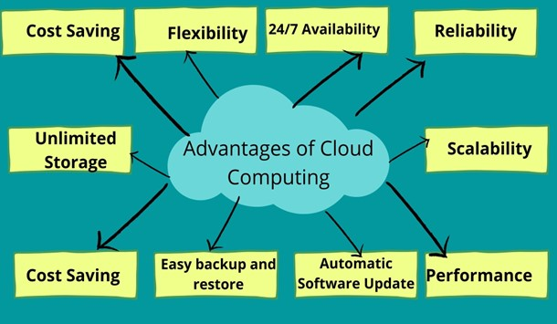

Cloud Technologies
- Defining cloud computing
- Defining private, public, and hybrid cloud
- Exploring the components of cloud infrastructure
- Defining the different Service Models
What is Cloud Computing?
Cloud computing is the use of hosted services, such as servers, data storage, databases, software, and networking over the internet¬ — instead of directly accessing your computer hard drive.
Types of cloud computing
Cloud computing is offered in 3 major forms: private, public, and hybrid cloud.
- Private Cloud: The private cloud computing service is a cloud computing model where the infrastructure is dedicated only to select users instead of the general public, either over the Internet or a private internal network. Other names for the private cloud are internal or corporate cloud. Some private cloud providers are VMware-vRealize Suite Cloud Management Platform, AWS-Virtual Private Cloud, Microsoft-Azure Private Cloud…
- Public Cloud: The public cloud is defined as computing services offered by third-party providers over the public Internet, making them available to anyone who wants to use or purchase them. They may be free or sold on-demand, allowing customers to pay only per usage for the CPU cycles, storage, or bandwidth they consume. Some public cloud services are AWS, GCP, Azure, IBM Cloud, Alibaba Cloud…
- Hybrid Cloud: A hybrid cloud is a computing environment that combines an on-premises data center (also called a private cloud) with a public cloud, allowing data and applications to be shared between them. Some public cloud providers are VMware, Microsoft Azure…
Components of cloud infrastructure

- Client-side Infrastructure: Here, users interact with the cloud through a front-end GUI (Graphical User Interface). Desktop, laptops, mobiles, tablets, and others are used on the client-side to access services.
- Application: The application may be any software or platform that a client wants to access.
- The operating system: The cloud operating system manages the operation, the virtual servers, execution and processes of virtual machines and virtual infrastructure, as well as the back-end hardware and software resources.
- Service: Cloud Services are offered in different models. These services are being provided based on the client’s request.
Some of the service models are seen below
Service Models
Cloud-Computing providers offer their “services” according to different models, of which the three standard models per NIST are Infrastructure as a Service (IaaS), Platform as a Service (PaaS), and Software as a Service (SaaS).

- IAAS: Infrastructure As A Service (IAAS) is means of delivering computing infrastructure as on-demand services. It is one of the three fundamental cloud service model servers’ storage network operating systems. In the user purchasing servers, software data center space, or network equipment and renting those resources as a fully outsourced service can demand model. It allows dynamic scaling, and the resources are distributed as a service. It generally includes multiple users on a single piece of hardware.
- PAAS: Platform as A Service (PAAS) is a cloud delivery model for applications composed of services managed by a third party. It provides elastic scaling of your application which allows developers to build applications and services over the internet and the deployment models include public, private and hybrid.
- SAAS: Software As A Service (SAAS) allows users to run existing online applications and it is a model software that is deployed as a hosting service and is accessed over Output Rephrased/Re-written Text the internet or software delivery model during which software and its associated data are hosted centrally and accessed using their client, usually an online browser over the web. SAAS services are used for the development and deployment of modern applications.
The emergence of Cloud computing has given rise to more as-a-service offerings. Some of them include: - AIaaS: AI as a service - DaaS: Desktop as a service - ITaaS: IT as a service - RaaS: Ransomware as a service.
Top benefits of cloud computing

- High Speed: the ability to spin up new instances in a matter of seconds.
- Efficiency and Cost Reduction
- Provides efficient Data Security
- Scalable: ease with quickly — scale up/down infrastructures.
- Collaboration: Cloud environments enable better collaboration across teams.
- Provides unlimited Storage Capacity.
- Provides ease in Back-up and Restoring of Data
- Reliability: Cloud computing makes data backup, disaster recovery, and business continuity easier and less expensive because data can be mirrored at multiple redundant sites on the cloud provider’s network.
FOCUS: AWS CLOUD
What Is Amazon Web Services(AWS): Amazon Web Services(AWS) is Amazon’s cloud computing platform that offers a mix of packaged platform as a service (PaaS), software as a service (SaaS), and infrastructure as a service (IaaS).
EC2 Amazon EC2 is AWS primary web service that provides resizable compute capacity in the cloud.
Instance types: Amazon EC2 provides a wide selection of instance types optimized to fit different use cases. Instance types comprise varying combinations of CPU, memory, storage, and networking capacity and give you the flexibility to choose the appropriate mix of resources for your applications. Each instance type includes one or more instance sizes, allowing you to scale your resources to the requirements of your target workload.
Example instance Family:
- c4 Compute optimized—For workloads requiring significant processing
- r3 Memory optimized—For memory-intensive workloads
- i2 Storage optimized—For workloads requiring high amounts of fast SSD storage
-
g2 GPU-based instances—Intended for graphics and general-purpose GPU compute workloads
-
Amazon Machine Images (AMIs): Defines the initial software that will be on an instance when it is launched. An AMI defines; The Operating System (OS) and its configuration, The initial state of any patches, Application or system software. AMI’s can be AWS published, from the AWS Marketplace, Generated from Existing Instances, or Uploaded Virtual Servers
-
Security Groups: This is a VPC concept. If an instance is running in an Amazon VPC, you can change which security groups are associated with an instance while the instance is running.
-
EBS: Is type of “block storage” volume offering by AWS. EBS provides persistent block-level storage volumes for use with Amazon EC2 instances.
-
Instance Stores: Is another type of “block storage” volume offering by AWS for your instance. This storage is located on disks that are physically attached to the host computer.
S3 Amazon Simple Storage Service is a secure, durable, and highly-scalable cloud storage. Some use cases for cloud storage include:
- Backup and archive for on-premises or cloud data.
- Content, media, and software storage and distribution.
- Big data analytics.
- Static website hosting.
- Cloud-native mobile and Internet application hosting.
VPC The Amazon Virtual Private Cloud (Amazon VPC) is a custom-defined virtual network within the AWS Cloud.

VPC COMPONENTS: An Amazon VPC consists of the following main components: Subnets, Route tables, Dynamic Host Configuration Protocol (DHCP) option sets Security groups, Network Access Control Lists (ACLs). Also, optional components: Internet Gateways (IGWs), Elastic IP (EIP) addresses, Elastic Network Interfaces (ENIs), Endpoints, Peering, Network Address Translation (NATs) instances and NAT gateways, Virtual Private Gateway (VPG), Customer Gateways (CGWs), and Virtual Private Networks (VPNs)
***Subnets:*** A subnet is a segment of an Amazon VPC’s IP address range.
Subnets reside within one Availability Zone and cannot span zones;
You can, however, have multiple subnets in one Availability Zone.
Each subnet must be associated with a route table, which controls
the routing for the subnet.
***Route Tables:*** A route table is a logical construct within an
Amazon VPC that contains a set of rules (called routes) that are
applied to the subnet and used to determine where network traffic is
directed.
***Internet Gateways:*** IGW allows communication between instances
in your Amazon VPC and the Internet.
***Dynamic Host Configuration***
Protocol (DHCP) Option Sets: provides a standard for passing
configuration information to hosts on a TCP/IP network. AWS
automatically creates and associates a DHCP option set for your
Amazon VPC upon creation and sets two options: domain-name-servers
(defaulted to AmazonProvidedDNS) and domain-name
(defaulted to the domain name for your region).
***AWS ELASTIC LOAD BALANCER (ELB)***
AWS has an Elastic Load Balancer that is used to distribute
incoming traffic across multiple targets, such as EC2 instances,
containers, and IP addresses, in one or more Availability Zones.
It monitors the health of its registered targets, and routes traffic
only to the healthy targets. Elastic Load Balancing supports routing
and load balancing of Hypertext.
Transfer Protocol (HTTP), Hypertext Transfer Protocol Secure (HTTPS),
Transmission Control Protocol (TCP), and Secure Sockets Layer (SSL)
traffic to Amazon EC2 instances.
***Types of AWS ELB:***

The two major Elastic load balancers are:
***Application Load Balancer***
Application layer that describes the use of HTTP and HTTPS connections
from clients to the load balancer and from the load balancer to your
back-end instance.
***Network Load Balancer***
Are used to route traffic through layer 4, based IPs and TCP or UDP ports.
***IAM***
IAM uses traditional identity concepts such as users, groups, and access
control policies to control who can use your AWS account, what services
and resources they can use, and how they can use them.
Principals: The first IAM concept to understand is principals.
A principal is an IAM entity that is allowed to interact with AWS
resources. A principal can be permanent or temporary, and it can
represent a human or an application. There are three types of principles:
root users, IAM users, and roles/temporary security tokens.
Repository
:octicons-tag-24: 0.1.0 · :octicons-milestone-24: Default: none
In order to display a link to the repository of your project as part of your
documentation, set repo_url in mkdocs.yml to the public URL of
your repository, e.g.:
repo_url: https://github.com/squidfunk/mkdocs-material
The link to the repository will be rendered next to the search bar on big screens and as part of the main navigation drawer on smaller screen sizes. Additionally, for public repositories hosted on GitHub or GitLab, the number of stars and forks is automatically requested and rendered.
GitHub repositories also include the tag of the latest release.[^1]
[^1]: Unfortunately, GitHub only provides an API endpoint to obtain the latest release - not the latest tag. Thus, make sure to create a release (not pre-release) for the latest tag you want to display next to the number of stars and forks.
Repository name
:octicons-tag-24: 0.1.0 ·
:octicons-milestone-24: Default: automatically set to GitHub, GitLab or
Bitbucket
MkDocs will infer the source provider by examining the URL and try to set the
repository name automatically. If you wish to customize the name, set
repo_name in mkdocs.yml:
repo_name: squidfunk/mkdocs-material
Repository icon
:octicons-tag-24: 5.0.0 ·
:octicons-milestone-24: Default:
:fontawesome-brands-git-alt: – fontawesome/brands/git-alt
While the default repository icon is a generic git icon, it can be set to
any icon bundled with the theme by referencing a valid icon path in
mkdocs.yml:
theme:
icon:
repo: fontawesome/brands/git-alt # (1)!
-
Enter a few keywords to find the perfect icon using our icon search and click on the shortcode to copy it to your clipboard:
Some popular choices:
- :fontawesome-brands-git: –
fontawesome/brands/git - :fontawesome-brands-git-alt: –
fontawesome/brands/git-alt - :fontawesome-brands-github: –
fontawesome/brands/github - :fontawesome-brands-github-alt: –
fontawesome/brands/github-alt - :fontawesome-brands-gitlab: –
fontawesome/brands/gitlab - :fontawesome-brands-gitkraken: –
fontawesome/brands/gitkraken - :fontawesome-brands-bitbucket: –
fontawesome/brands/bitbucket - :fontawesome-solid-trash: –
fontawesome/solid/trash
Code actions
:octicons-tag-24: 9.0.0 · :octicons-unlock-24: Feature flag
If the repository URL points to a valid GitHub, GitLab or Bitbucket
repository, MkDocs provides a setting called edit_uri, which
resolves to the subfolder where your documentation is hosted.
If your default branch is called main, change the setting to:
edit_uri: edit/main/docs/
After making sure that edit_uri is correctly configured, buttons for code
actions can be added. Two types of code actions are supported: edit and view
(GitHub only):
=== ":material-file-edit-outline: Edit this page"
``` yaml
theme:
features:
- content.action.edit
```
=== ":material-file-eye-outline: View source of this page"
``` yaml
theme:
features:
- content.action.view
```
The icon of the edit and view buttons can be changed with the following lines:
theme:
icon:
edit: material/pencil # (1)!
view: material/eye
-
Enter a few keywords to find the perfect icon using our icon search and click on the shortcode to copy it to your clipboard:
Revisioning
The following plugins are fully integrated with Material for MkDocs, allowing for showing the date of last update and creation of a document, as well as links to all contributors or authors involved.
Document dates
:octicons-tag-24: 4.6.0 · :octicons-cpu-24: Plugin
The git-revision-date-localized plugin adds support for adding the date of
last update and creation of a document at the bottom of each page. Install it
with pip:
pip install mkdocs-git-revision-date-localized-plugin
Then, add the following lines to mkdocs.yml:
plugins:
- git-revision-date-localized:
enable_creation_date: true
The following configuration options are supported:
enabled{ #+git-revision-date-localized.enabled }
: :octicons-milestone-24: Default: true – This option specifies whether
the plugin is enabled when building your project. If you want to switch
the plugin off, e.g. for local builds, use an environment variable:
``` yaml
plugins:
- git-revision-date-localized:
enabled: !ENV [CI, false]
```
type{ #+git-revision-date-localized.type }
: :octicons-milestone-24: Default: date – The format of the date to be
displayed. Valid values are date, datetime, iso_date, iso_datetime
and timeago:
``` yaml
plugins:
- git-revision-date-localized:
type: date
```
enable_creation_date{ #+git-revision-date-localized.enable_creation_date }
: :octicons-milestone-24: Default: false – Enables the display of the
creation date of the file associated with the page next to the last updated
date at the bottom of the page:
``` yaml
plugins:
- git-revision-date-localized:
enable_creation_date: true
```
fallback_to_build_date{ #+git-revision-date-localized.fallback_to_build_date }
: :octicons-milestone-24: Default: false – Enables falling back to
the time when mkdocs build was executed. Can be used as a fallback when
the build is performed outside of a git repository:
``` yaml
plugins:
- git-revision-date-localized:
fallback_to_build_date: true
```
The other configuration options of this extension are not officially supported by Material for MkDocs, which is why they may yield unexpected results. Use them at your own risk.
Document contributors
:octicons-heart-fill-24:{ .mdx-heart } Sponsors only{ .mdx-insiders } · :octicons-tag-24: insiders-4.19.0 · :octicons-cpu-24: Plugin · :octicons-beaker-24: Experimental
The git-committers[^2] plugin renders the GitHub avatars of all contributors,
linking to their GitHub profiles at the bottom of each page. As always, it can
be installed with pip:
[^2]: We currently recommend using a fork of the git-committers plugin, as it contains many improvements that have not yet been merged back into the original plugin. See byrnereese/mkdocs-git-committers-plugin#12 for more information.
pip install mkdocs-git-committers-plugin-2
Then, add the following lines to mkdocs.yml:
plugins:
- git-committers:
repository: squidfunk/mkdocs-material
branch: main
The following configuration options are supported:
enabled{ #+git-committers.enabled }
: :octicons-milestone-24: Default: true – This option specifies whether
the plugin is enabled when building your project. If you want to switch
the plugin off, e.g. for local builds, use an environment variable:
``` yaml
plugins:
- git-committers:
enabled: !ENV [CI, false]
```
repository{ #+git-committers.repository }
: :octicons-milestone-24: Default: none · :octicons-alert-24: Required –
This property must be set to the slug of the repository that contains your
documentation. The slug must follow the pattern <username>/<repository>:
``` yaml
plugins:
- git-committers:
repository: squidfunk/mkdocs-material
```
branch{ #+git-committers.branch }
: :octicons-milestone-24: Default: master – This property should be set to
the branch of the repository from which to retrieve the contributors. To use the main branch:
``` yaml
plugins:
- git-committers:
branch: main
```
The other configuration options of this extension are not officially supported by Material for MkDocs, which is why they may yield unexpected results. Use them at your own risk.
Document authors
:octicons-heart-fill-24:{ .mdx-heart } Sponsors only{ .mdx-insiders } · :octicons-tag-24: insiders-4.19.0 · :octicons-cpu-24: Plugin · :octicons-beaker-24: Experimental
The git-authors plugin extracts the authors of a document from git to display
them at the bottom of each page. It's a lightweight alternative to the
git-committers plugin. Install it with pip:
pip install mkdocs-git-authors-plugin
Then, add the following lines to mkdocs.yml:
plugins:
- git-authors